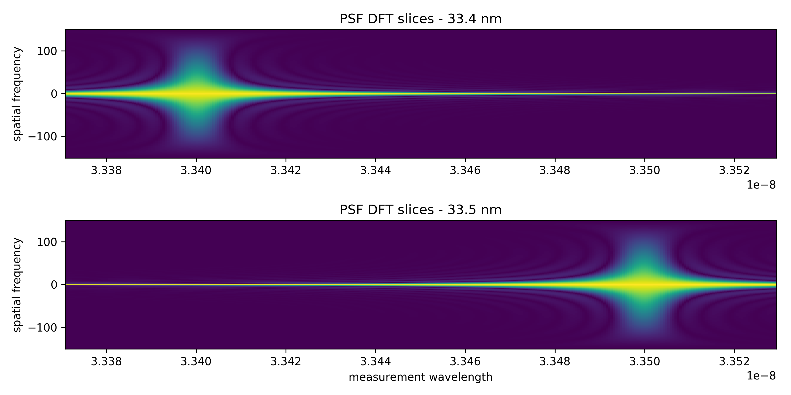
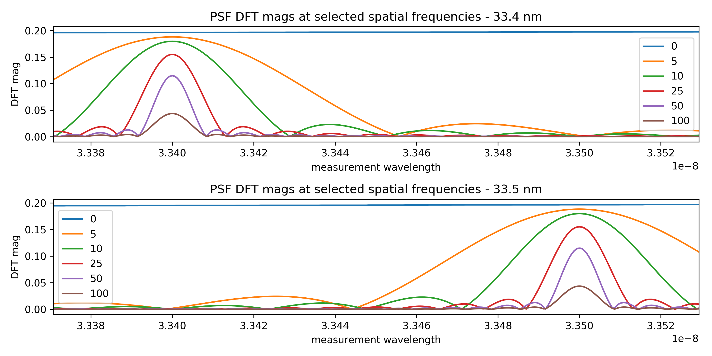

Each column of pixels is a 'slice' through the center of the DFT of a PSF measured at a particular distance from the sieve.
1D view of the above plot at some selected spatial frequencies. Notice the DFT magnitude is always maximized at the focal plane for each spatial frequency.